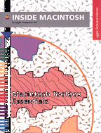

Macintosh Toolbox Essentials
Inside Macintosh: Macintosh Toolbox Essentials describes how to implement essential user interface components in your Macintosh application. The Macintosh Toolbox is at the heart of the Macintosh.This book explains how to
Additional features of the Macintosh Toolbox--for example, help balloons and the Clipboard--are described in Inside Macintosh: More Macintosh Toolbox.
- create menus
- create windows, dialog boxes, and alert boxes
- create controls such as buttons and scroll bars
- create icons for your application and its documents
- respond to user actions
Availability: Click below to obtain Inside Macintosh: Macintosh Toolbox Essentials in any of the following formats.
Book Contents
- Figures, Tables, and Listings
- Preface - About This Book
- Chapter 1 - Introduction to the Macintosh Toolbox
- Chapter 2 - Event Manager
- Chapter 3 - Menu Manager
- Chapter 4 - Window Manager
- Chapter 5 - Control Manager
- Chapter 6 - Dialog Manager
- Chapter 7 - Finder Interface
- Glossary